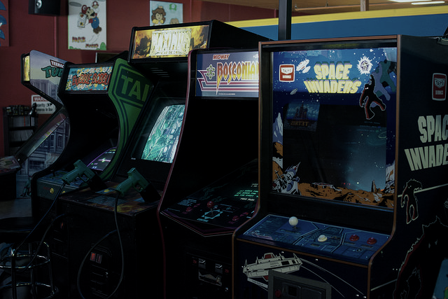

Getting started with arcade emulation¶
Arcade emulation requires a different planning approach than console emulation. Arcade emulator terminology can also differ from the terms used in other kinds of emulation.
Process¶
- Choose an arcade emulator to match your system
- Use the correct version romsets for that emulator
The libretro core ecosystem includes a variety of arcade emulators, each with specific strengths and each requiring its own distinct version of arcade "romsets" which the emulator supports. Every arcade emulator core is optimized for different hardware and different games. This guide is intended to help you decide which core to use and find out what romset version is required for that emulator.

Step 1: Choose an arcade emulator to match your system¶
There are two families of multi-system arcade emulators available as libretro cores: FinalBurn and MAME. These emulators are in turn available in multiple versions to allow users to best match a core to their system.
There are two principle criteria which affect arcade emulator core choice:
- Frontend integration
- Processor performance requirements versus supported game library
Frontend integration¶
Among the libretro arcade cores, FinalBurn Neo and MAME 2003-Plus have the closest integration with the libretro frontend API. In practice, this means that more functionality is accessible through libretro frontends like RetroArch in areas like configuration, control mapping, fast forward and rewind, screenshots, etc. .
Processor performance requirements versus supported game library¶
As the years have passed, emulators have become able to recreate arcade games with more and more accuracy to the original system. Arcade emulators have also added support for emulating more games over time. Particularly with MAME cores, increasing emulation accuracy requires increasing amounts of processing power, meaning that cores based on more recent emulators require greater processor power than cores based on older versions.
Ultra low-power devices¶
For purposes of this guide, ultra low-power devices are those such as the Raspberry Pi 0 as well as older smartphones and tablets.
| Recommended MAME Emulator | Recommended FinalBurn Emulator | |
|---|---|---|
| Primary recommendation | MAME 2000 | FB Alpha 2012 |
| Secondary recommendation | MAME 2003-Plus | FinalBurn Neo |
!!! Note Secondary recommendations do not run at full speed on all systems in this category, but may allow the user to play games which are not available via the primary recommendation.
Low-power devices¶
For purposes of this guide, low power devices include:
- Single board computers like the Raspberry Pi2 and Raspberry Pi3, Odroid-XU3/4, and Amlogic S905 boxes
- Consoles like the original XBox, the PlayStation 3, Wii, WiiU, and Switch
- Modern smartphones and tablets
- Desktop and laptop computers with processors from the Pentium 4/Athlon XP generation to the Sandy Bridge/K10 generation.
| Recommended MAME Emulator | Recommended FinalBurn Emulator | |
|---|---|---|
| Primary recommendation | MAME 2003-Plus | FinalBurn Neo |
| Secondary recommendation | MAME 2010, MAME 2016 | N/A |
!!! Note Secondary recommendations do not run at full speed on all systems in this category, but may allow the user to play games which are not available via the primary recommendation.
Full-power devices¶
Users with modern desktop and laptop processors, and other full power systems, have the greatest flexibility in terms of which arcade emulator cores to use.
Step 2: Use the correct version romsets for that emulator¶
For best results, start with a full ROM collection with a version that matches the emulator you're using.
In general, you will only get good results with a full collection of arcade romsets for your chosen emulator. Starting with individual arcade romset zip files is unlikely to work because individual romsets are often not tagged with what MAME version they are built for. Also, individual romset zip files may not include BIOS ROMs, "Parent" romsets, necessary audio sample files, etc.
!!! tip Full Non-Merged romsets are widely available for all of the "historic" MAME cores. Full Non-Merged romsets are the simplest romset format to get started with because each romset zip contains all necessary files for one game.
| Emulator | Required ROM Version | ClrMamePro dat file |
|---|---|---|
| FB Neo | FBNeo (latest version) | here |
| FB Alpha 2012 | FBA 0.2.97.24 | N/A |
| MAME 2000 | MAME 0.37b5 | N/A |
| MAME 2003 | MAME 0.78 | N/A |
| MAME 2003-Plus | MAME 2003-Plus (latest version) | N/A |
| MAME 2010 | MAME 0.139 | N/A |
| MAME 2015 | MAME 0.160 | N/A |
| MAME 2016 | MAME 0.174 | N/A |
| MAME (latest version) | MAME (latest version) | N/A |
!!! Warning "Warning: Keep arcade romsets zipped" Unlike emulating some other systems, arcade romsets should remained zipped when used. If you extract arcade romsets, they won't work.
Arcade ROM terminology¶
- ROM, ROM set, and romset: Arcade games are packaged as zip files, most of which are composed of more than one individual 'ROM' file. That is why some resources refer to an individual arcade game as a ROM (like people use to describe a zipped game cartridge ROM) while other resources refer to an individual game as a ROM set or romset.
- ROM version or romset version: Each version of an arcade emulator must be used with ROMs that have the same exact version number. For example, MAME 0.37b5 ROMs are required by the MAME 2000 emulator, but will not work correctly with the MAME 2010 emulator, which requires MAME 0.139 ROMs.
- Sample: Some games require an additional zip file with recorded sounds or music in order for audio to work correctly. The path where these samples should be copied varies from emulator to emulator.
- CHD: Some MAME games require data from an internal hard drive, CD-ROM, laserdisk, or other media in order to be emulated -- those forms of media are packaged as CHD files. CHD files should be copied to subfolders within the folder where the MAME ROM zips have been installed.
In addition to having a version number, arcade ROMs can be formatted four ways:
- Full Non-merged: All romsets can be used standalone because each zip contains all the files needed to run that game, including any ROMs from 'parent' ROM sets and BIOS sets.
!!! ClrMamePro users To rebuild Full Non-Merged romsets, use
Non-Mergedmode and deselectSeparate BIOS setsvia theAdvancedbutton in theRebuildandScannermenus. ClrMamePro may display BIOS sets as missing in scans with these settings, but that is because all of the BIOS files will be distributed directly to the game romsets that need them. - Non-merged ROM: All romsets can be used standalone because each zip contains all the files needed to run that game, including any files from 'parent romsets'. The only exceptions are games which use BIOS ROMs, which are formatted as 'Split' and must be kept in the same folder as the game romset which uses it.
- Split: Some romsets that are considered clones, translations, or bootlegs also require a "parent" romset to run. In some cases the parent is not the most popular or best working version of the game, however. For example, in a Split set
pacman.zip(a clone), will not work withoutpuckman.zip(its parent). - Merged: Clones are merged into the parent romset zip, meaning that more than one game is stored per file. Merged romsets are not supported by libretro cores.
RetroArch Playlist Scanner Support¶
The RetroArch content database supports arcade romsets in Full Non-Merged and Split formats. In order to be recognized by the scanner, Full Non-Merged and Split romsets must also be processed by TorrentZip to standardize their CRC.
!!! info "Credits" The arcade cabinets image is based on an image by Rob DiCaterino, licensed for reuse under a Creative Commons (CC BY 2.0) License. Original image and license: https://www.flickr.com/photos/goodrob13/17385639015/